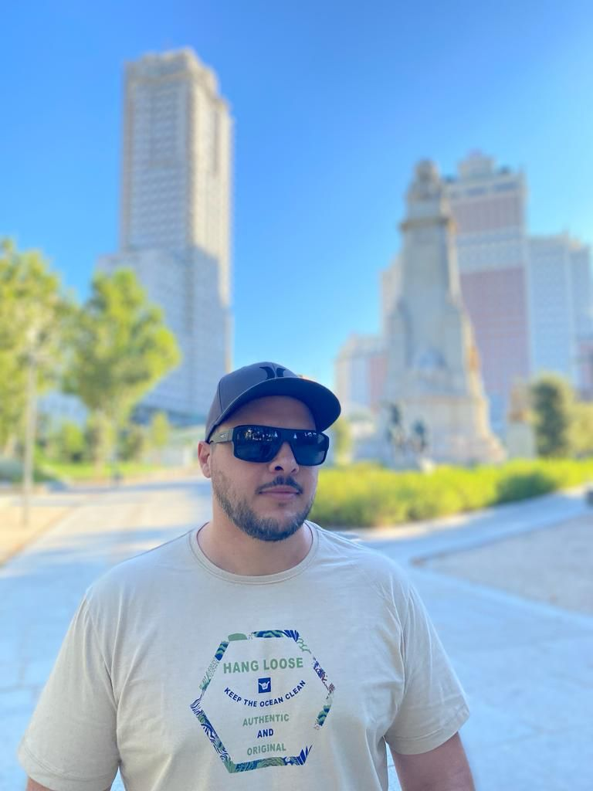
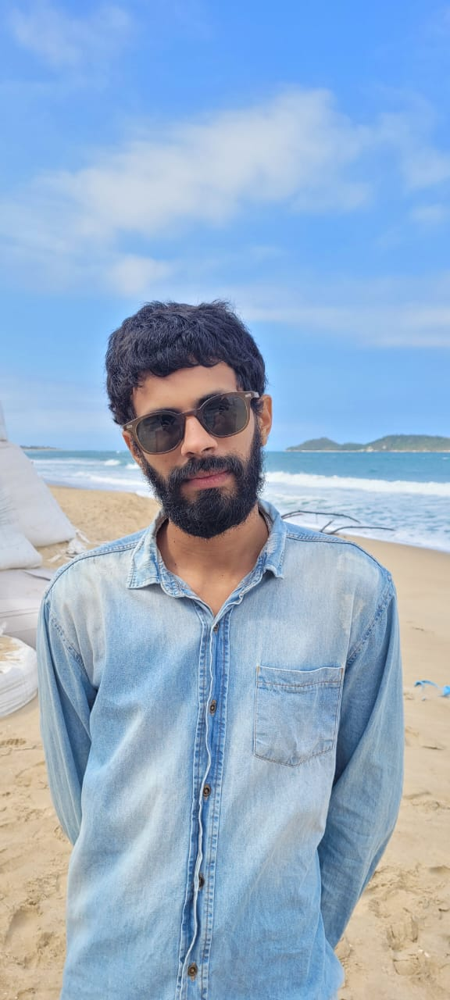
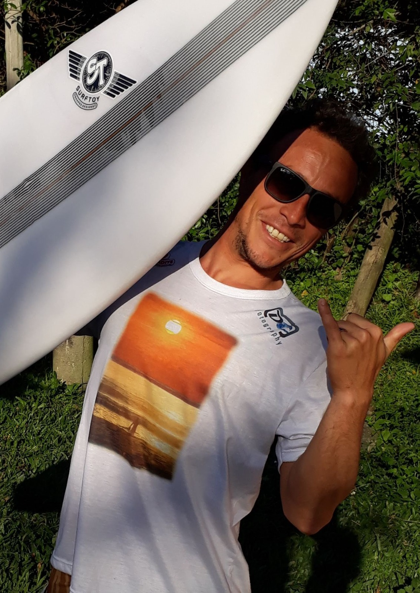

Dionatan Acordi
Idade: 33 anos
Educação: Ensino Técnico
Cidade: Florianópolis - SC
Midias: Utilizo as redes (Facebook, Instagran, WhatsApp e Linkedin).
Curso: Desenvolvimento Web
Objetivo: Meu principal objetivo é concluir o curso para ingressar na área da
programação.
Como o curso vai ajudá-lo: Me oferece conhecimentos teóricos e práticos de
programação, possibilitando oportunidades no mercado de trabalho.
linkdin

Leonardo Modesto
Idade: 30 anos
Educação: Superior
Cidade: Florianópolis - SC
Midias: Utilizo as redes (Instagran, WhatsApp e Linkedin).
Curso: Desenvolvimento Web
Objetivo: Meu objetivo é aprimorar meus conhecimentos de UI Design e desenvolvimento web e ingressar na área de Desenvolvimento Web.
Como o curso vai ajudá-lo: Obter conhecimento sobre html, css, e java, assim como hard e soft skills para conseguir entrar na área de desenvolvimento web.
linkdin

Vitor Hugo
Idade: 40 anos
Educação: Ensino Técnico
Cidade: Florianópolis - SC
Midias: Utilizo as redes (Facebook, Instagran, WhatsApp e Linkedin).
Curso: Desenvolvimento Web
Objetivo: Tornar-me um bom Programador, ser bem remunerado.....Viver bem!!
Como o curso vai ajudá-lo: Permite adquirir o conhecimento inicial, sei como estudar e pesquisar códigos, solucionar problemas.
linkdin